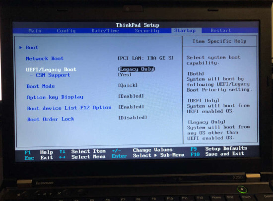
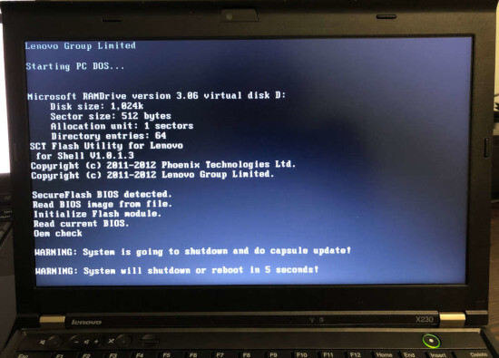
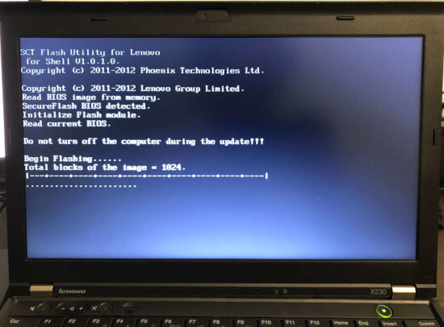
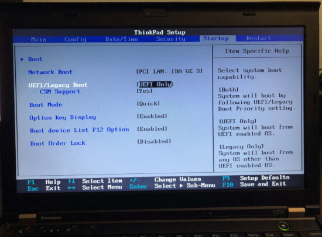

Ivy Bridge Lenovo ThinkPad Internal Flashing
Introduction
Old versions of stock BIOS for these models have several security issues. In order to flash coreboot internally, two of them are of interest.
First is the fact the SMM_BWP and BLE are not enabled in BIOS
versions released before 2014. We have tested many versions on T430 and
X230 and found out that SMM_BWP=1 only since the update, the changelog
of which contains following line:
(New) Improved the UEFI BIOS security feature.
Second is S3 Boot Script vulnerability, that was discovered and fixed later.
Requirements
USB drive (in case you need to downgrade BIOS)
Linux install that (can be) loaded in UEFI mode
BIOS versions
Below is a table of BIOS versions that are vulnerable enough for our goals, per model. The version number means that you need to downgrade to that or earlier version.
Model |
BIOS version |
|---|---|
X230 |
2.60 |
X230T |
2.58 |
T430 |
2.64 |
T430s |
2.59 |
T530 |
2.60 |
W530 |
2.58 |
If your BIOS version is equal or lower, skip to the Examining protections section. If not, go through the downgrade process, described next.
Downgrading BIOS
Go to the Lenovo web site and download BIOS Update Bootable CD for your machine of needed version (see above).
Lenovo states that BIOS has “security rollback prevention”, meaning once
you update it to some version X, you will not be able to downgrade it to
pre-X version. That’s not true. It seems that this is completely
client-side restriction in flashing utilities (both Windows utility and
Bootable CD). You just need to call winflash.exe or dosflash.exe
directly. Therefore you need to modify the bootable CD image you just
downloaded.
Extract an El Torito image:
geteltorito -o ./bios.img g1uj41us.iso
Mount the partition in that image:
sudo mount -t vfat ./bios.img /mnt -o loop,offset=16384
List files, find the AUTOEXEC.BAT file and the FLASH directory:
ls /mnt
ls /mnt/FLASH
Inside the FLASH directory, there should be a directory called
G1ET93WW or similar (exact name depends on your ThinkPad model and
BIOS version). See what’s inside:
ls /mnt/FLASH/G1ET93WW
There must be a file with .FL1 extension called $01D2000.FL1 or
something similar.
Now open the AUTOEXEC.BAT file:
sudo vim /mnt/AUTOEXEC.BAT
You will see a list of commands:
@ECHO OFF
PROMPT $p$g
cd c:\flash
command.com
Replace the last line (command.com) with this (change path to the
.FL1 file according to yours):
dosflash.exe /sd /file G1ET93WW\$01D2000.FL1
Save the file, then unmount the partition:
sudo umount /mnt
Write this image to a USB drive (replace /dev/sdX with your USB drive
device name):
sudo dd if=./bios.img of=/dev/sdX bs=1M
Now reboot and press F1 to enter BIOS settings. Open the Startup tab and set the startup mode to Legacy (or Both/Legacy First):

Press F10 to save changes and reboot.
Now, before you process, make sure that AC adapter is connected! If your battery will die during the process, you’ll likely need external programmer to recover.
Boot from the USB drive (press F12 to select boot device), and BIOS flashing process should begin:


It may reboot a couple of times in the process. Do not interrupt it.
When it’s completed, go back to the BIOS settings and set startup mode to UEFI (or Both/UEFI First). This is required for vulnerability exploitation.

Then boot to your system and make sure that /sys/firmware/efi or
/sys/firmware/efivars exist.
Examining protections (theory)
There are two main ways that Intel platform provides to protect BIOS chip:
BIOS_CNTL register of LPC Interface Bridge Registers (accessible via PCI configuration space, offset 0xDC). It has:
SMM_BWP (SMM BIOS Write Protect) bit. If set to 1, the BIOS is writable only in SMM. Once set to 1, cannot be changed anymore.
BLE (BIOS Lock Enable) bit. If set to 1, setting BIOSWE to 1 will raise SMI. Once set to 1, cannot be changed anymore.
BIOSWE (BIOS Write Enable) bit. Controls whether BIOS is writable. This bit is always R/W.
SPI Protected Range Registers (PR0-PR4) of SPI Configuration Registers (SPIBAR+0x74 - SPIBAR+0x84). Each register has bits that define protected range, plus WP bit, that defines whether write protection is enabled.
There’s also FLOCKDN bit of HSFS register (SPIBAR+0x04) of SPI Configuration Registers. When set to 1, PR0-PR4 registers cannot be written. Once set to 1, cannot be changed anymore.
To be able to flash, we need SMM_BWP=0, BIOSWE=1, BLE=0, FLOCKDN=0 or
SPI protected ranges (PRx) to have a WP bit set to 0.
Let’s see what we have. Examine HSFS register:
sudo chipsec_main -m chipsec.modules.common.spi_lock
You should see that FLOCKDN=1:
[x][ =======================================================================
[x][ Module: SPI Flash Controller Configuration Locks
[x][ =======================================================================
[*] HSFS = 0xE009 << Hardware Sequencing Flash Status Register (SPIBAR + 0x4)
[00] FDONE = 1 << Flash Cycle Done
[01] FCERR = 0 << Flash Cycle Error
[02] AEL = 0 << Access Error Log
[03] BERASE = 1 << Block/Sector Erase Size
[05] SCIP = 0 << SPI cycle in progress
[13] FDOPSS = 1 << Flash Descriptor Override Pin-Strap Status
[14] FDV = 1 << Flash Descriptor Valid
[15] FLOCKDN = 1 << Flash Configuration Lock-Down
Then check BIOS_CNTL and PR0-PR4:
sudo chipsec_main -m common.bios_wp
Good news: on old BIOS versions, SMM_BWP=0 and BLE=0.
Bad news: there are 4 write protected SPI ranges:
[x][ =======================================================================
[x][ Module: BIOS Region Write Protection
[x][ =======================================================================
[*] BC = 0x 8 << BIOS Control (b:d.f 00:31.0 + 0xDC)
[00] BIOSWE = 0 << BIOS Write Enable
[01] BLE = 0 << BIOS Lock Enable
[02] SRC = 2 << SPI Read Configuration
[04] TSS = 0 << Top Swap Status
[05] SMM_BWP = 0 << SMM BIOS Write Protection
[-] BIOS region write protection is disabled!
[*] BIOS Region: Base = 0x00500000, Limit = 0x00BFFFFF
SPI Protected Ranges
------------------------------------------------------------
PRx (offset) | Value | Base | Limit | WP? | RP?
------------------------------------------------------------
PR0 (74) | 00000000 | 00000000 | 00000000 | 0 | 0
PR1 (78) | 8BFF0B40 | 00B40000 | 00BFFFFF | 1 | 0
PR2 (7C) | 8B100B10 | 00B10000 | 00B10FFF | 1 | 0
PR3 (80) | 8ADE0AD0 | 00AD0000 | 00ADEFFF | 1 | 0
PR4 (84) | 8AAF0800 | 00800000 | 00AAFFFF | 1 | 0
Other way to examine SPI configuration registers is to just dump SPIBAR:
sudo chipsec_util mmio dump SPIBAR
You will see SPIBAR address (0xFED1F800) and registers (for example,
00000004 is HSFS):
[mmio] MMIO register range [0x00000000FED1F800:0x00000000FED1F800+00000200]:
+00000000: 0BFF0500
+00000004: 0004E009
...
As you can see, the only thing we need is to unset WP bit on PR0-PR4.
But that cannot be done once FLOCKDN is set to 1.
Now the fun part!
FLOCKDN may only be cleared by a hardware reset, which includes S3
state. On S3 resume boot path, the chipset configuration has to be
restored and it’s done by executing so-called S3 Boot Scripts. You can
dump these scripts by executing:
sudo chipsec_util uefi s3bootscript
There are many entries. Along them, you can find instructions to write
to HSFS (remember, we know that SPIBAR is 0xFED1F800):
Entry at offset 0x2B8F (len = 0x17, header len = 0x0):
Data:
02 00 17 02 00 00 00 01 00 00 00 04 f8 d1 fe 00 |
00 00 00 09 e0 04 00 |
Decoded:
Opcode : S3_BOOTSCRIPT_MEM_WRITE (0x0002)
Width : 0x02 (4 bytes)
Address: 0xFED1F804
Count : 0x1
Values : 0x0004E009
These scripts are stored in memory. The vulnerability is that we can
overwrite this memory, change these instructions and they will be
executed on S3 resume. Once we patch that instruction to not set FLOCKDN
bit, we will be able to write to PR0-PR4 registers.
Creating a backup
Before you proceed, please create a backup of the bios region. Then,
in case something goes wrong, you’ll be able to flash it back externally.
The me region is locked, so an attempt to create a full dump will fail.
But you can back up the bios:
sudo flashrom -p internal -r bios_backup.rom --ifd -i bios
If you will ever need to flash it back, use --ifd -i bios as well:
sudo flashrom -p <YOUR_PROGRAMMER> -w bios_backup.rom --ifd -i bios
Caution: if you will omit --ifd -i bios for flashing, you will
brick your machine, because your backup has FFs in place of fd and
me regions. Flash only bios region!
Removing protections (practice)
The original boot script writes 0xE009 to HSFS. FLOCKDN is 15th bit, so
let’s write 0x6009 instead:
sudo chipsec_main -m tools.uefi.s3script_modify -a replace_op,mmio_wr,0xFED1F804,0x6009,0x2
You will get a lot of output and in the end you should see something like this:
[*] Modifying S3 boot script entry at address 0x00000000DAF49B8F..
[mem] 0x00000000DAF49B8F
[*] Original entry:
2 0 17 2 0 0 0 1 0 0 0 4 f8 d1 fe 0 |
0 0 0 9 e0 4 0 |
[mem] buffer len = 0x17 to PA = 0x00000000DAF49B8F
2 0 17 2 0 0 0 1 0 0 0 4 f8 d1 fe 0 |
0 0 0 9 60 0 0 | `
[mem] 0x00000000DAF49B8F
[*] Modified entry:
2 0 17 2 0 0 0 1 0 0 0 4 f8 d1 fe 0 |
0 0 0 9 60 0 0 | `
[*] After sleep/resume, check the value of register 0xFED1F804 is 0x6009
[+] PASSED: The script has been modified. Go to sleep..
Now go to S3, then resume and check FLOCKDN. It should be 0:
sudo chipsec_main -m chipsec.modules.common.spi_lock
...
[x][ =======================================================================
[x][ Module: SPI Flash Controller Configuration Locks
[x][ =======================================================================
[*] HSFS = 0x6008 << Hardware Sequencing Flash Status Register (SPIBAR + 0x4)
[00] FDONE = 0 << Flash Cycle Done
[01] FCERR = 0 << Flash Cycle Error
[02] AEL = 0 << Access Error Log
[03] BERASE = 1 << Block/Sector Erase Size
[05] SCIP = 0 << SPI cycle in progress
[13] FDOPSS = 1 << Flash Descriptor Override Pin-Strap Status
[14] FDV = 1 << Flash Descriptor Valid
[15] FLOCKDN = 0 << Flash Configuration Lock-Down
[-] SPI Flash Controller configuration is not locked
[-] FAILED: SPI Flash Controller not locked correctly.
...
Remove WP from protected ranges:
sudo chipsec_util mmio write SPIBAR 0x74 0x4 0xAAF0800
sudo chipsec_util mmio write SPIBAR 0x78 0x4 0xADE0AD0
sudo chipsec_util mmio write SPIBAR 0x7C 0x4 0xB100B10
sudo chipsec_util mmio write SPIBAR 0x80 0x4 0xBFF0B40
Verify that it worked:
sudo chipsec_main -m common.bios_wp
[x][ =======================================================================
[x][ Module: BIOS Region Write Protection
[x][ =======================================================================
[*] BC = 0x 9 << BIOS Control (b:d.f 00:31.0 + 0xDC)
[00] BIOSWE = 1 << BIOS Write Enable
[01] BLE = 0 << BIOS Lock Enable
[02] SRC = 2 << SPI Read Configuration
[04] TSS = 0 << Top Swap Status
[05] SMM_BWP = 0 << SMM BIOS Write Protection
[-] BIOS region write protection is disabled!
[*] BIOS Region: Base = 0x00500000, Limit = 0x00BFFFFF
SPI Protected Ranges
------------------------------------------------------------
PRx (offset) | Value | Base | Limit | WP? | RP?
------------------------------------------------------------
PR0 (74) | 0AAF0800 | 00800000 | 00AAF000 | 0 | 0
PR1 (78) | 0ADE0AD0 | 00AD0000 | 00ADE000 | 0 | 0
PR2 (7C) | 0B100B10 | 00B10000 | 00B10000 | 0 | 0
PR3 (80) | 0BFF0B40 | 00B40000 | 00BFF000 | 0 | 0
PR4 (84) | 00000000 | 00000000 | 00000000 | 0 | 0
Bingo!
Now you can flash internally. Remember to flash only the bios region
(use --ifd -i bios -N flashrom arguments). fd and me are still
locked.
Note that you should have an external SPI programmer as a backup method. It will help you recover if you flash non-working ROM by mistake.